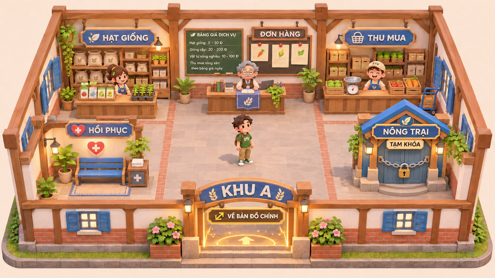

Khu A · Hợp tác xã mini
Bộ tham chiếu dựng asset 3D: trước, sau, trái, phải, trên, dưới. Nông trại tạm khóa; cổng vàng về bản đồ chính hoạt động. Ảnh AI không phải bản vẽ kỹ thuật chính xác: mặt khuất được suy diễn. Chữ khi dựng asset phải dùng nguồn chữ chuẩn, tách khỏi texture AI. Xem hướng dẫn và quy ước bố trí.

00. Phối cảnh chuẩn